History
Pick up where you left off.
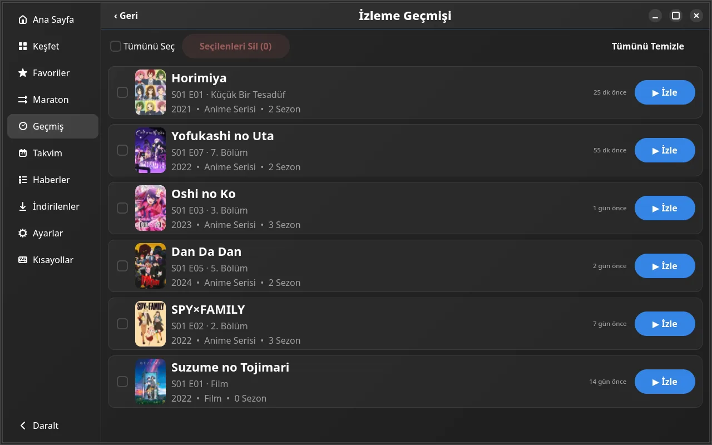
Linux x86_64 v1.2.7
Discover, watch, download. Your library stays ready.
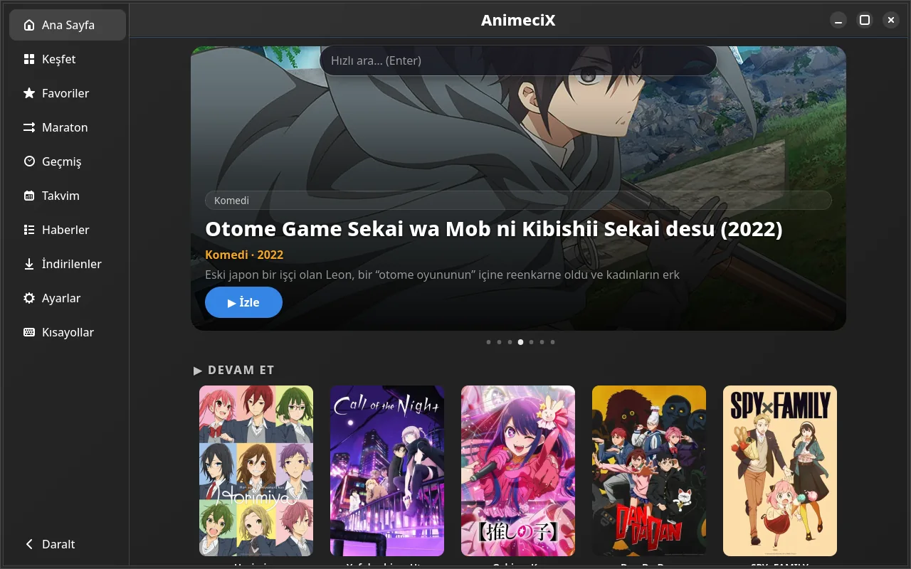
Filter by genre, score and popularity. Find what you want in seconds.
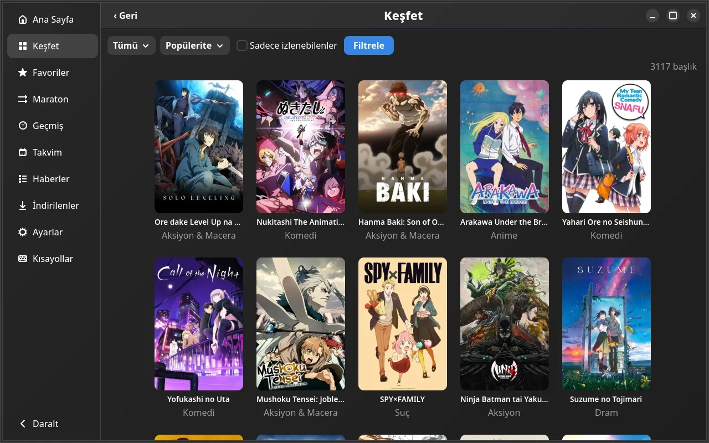
MPV player, official intro/outro skip and Anime4K. Pick a quality, resume where you left off.
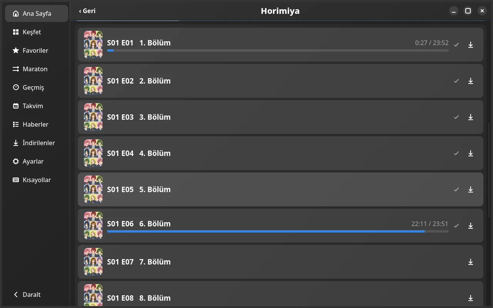
History, favorites, calendar and movies. All in one place, all yours.
Pick up where you left off.

Star it, keep it close.
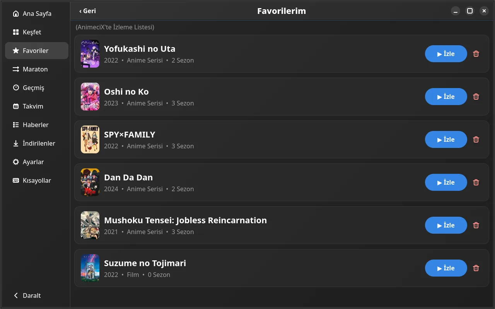
Never miss a new episode.
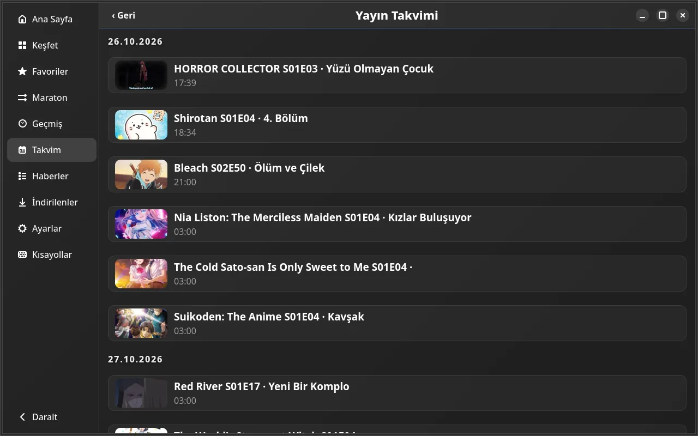
One click to watch.
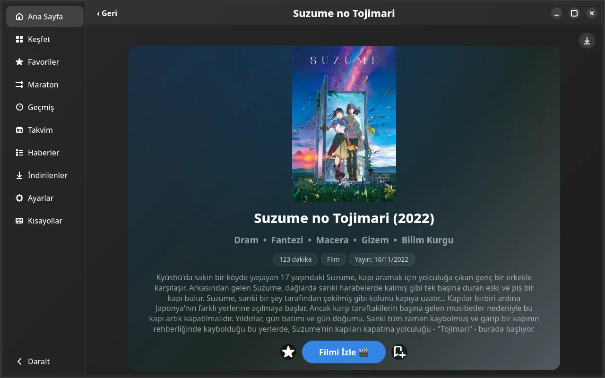
Dark, Claret, Forest, Navy, Purple. Switch instantly, rows follow the theme.
Now: Dark
Theme changes apply instantly.
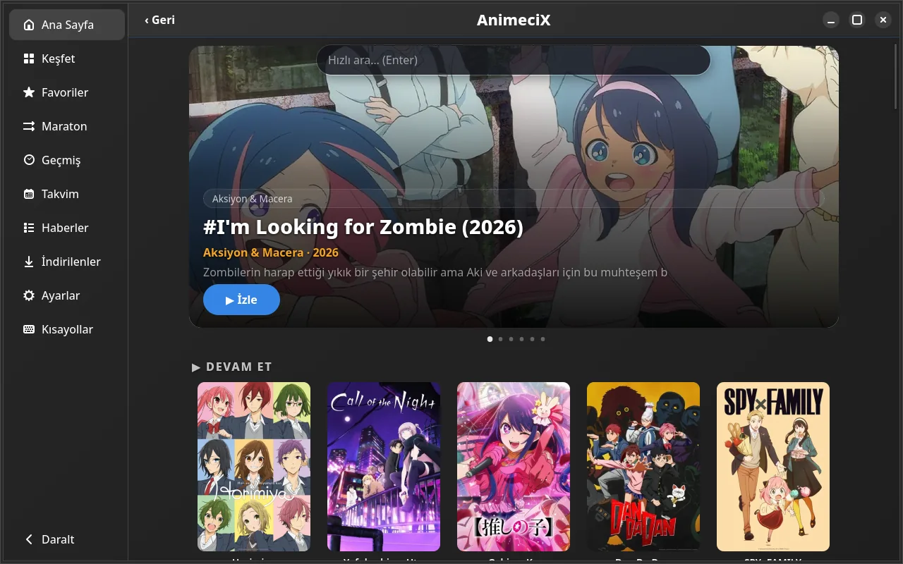
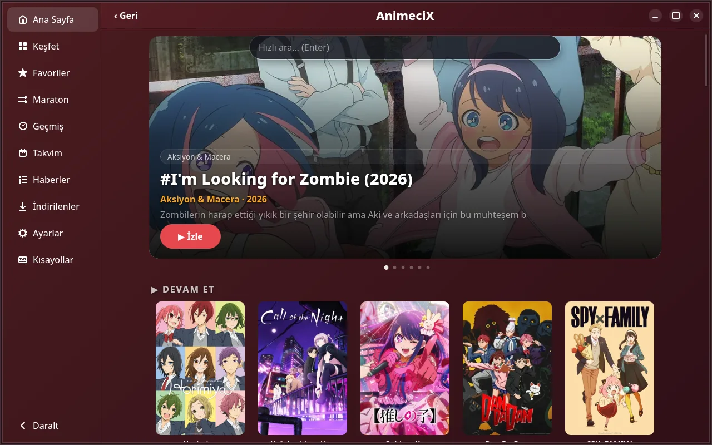
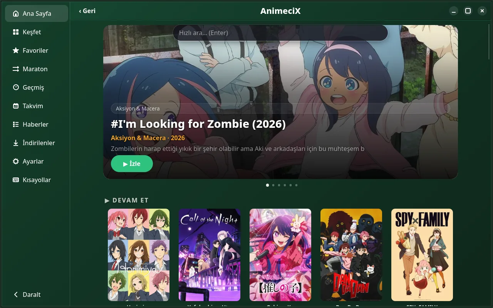
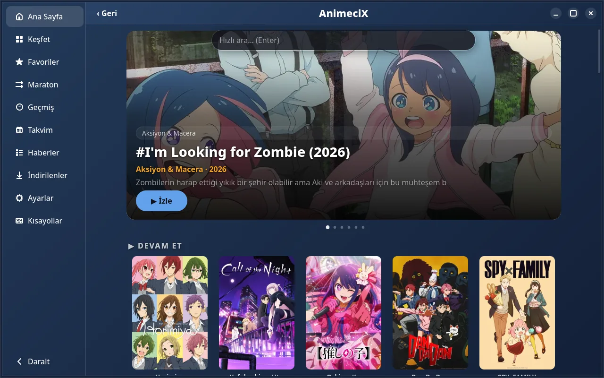
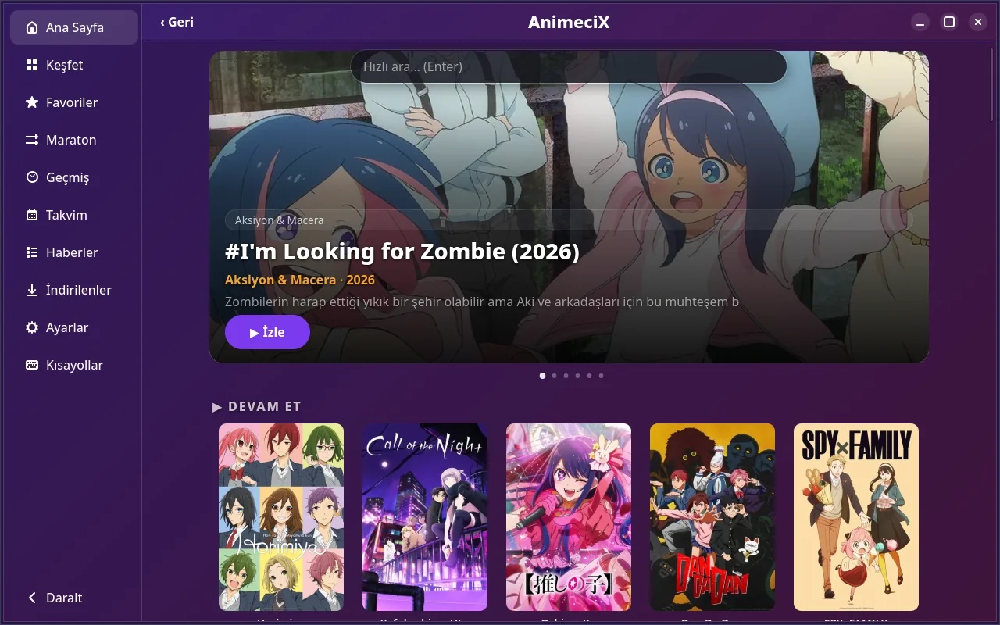
Six connections, resume and batch download. Ready for the road.
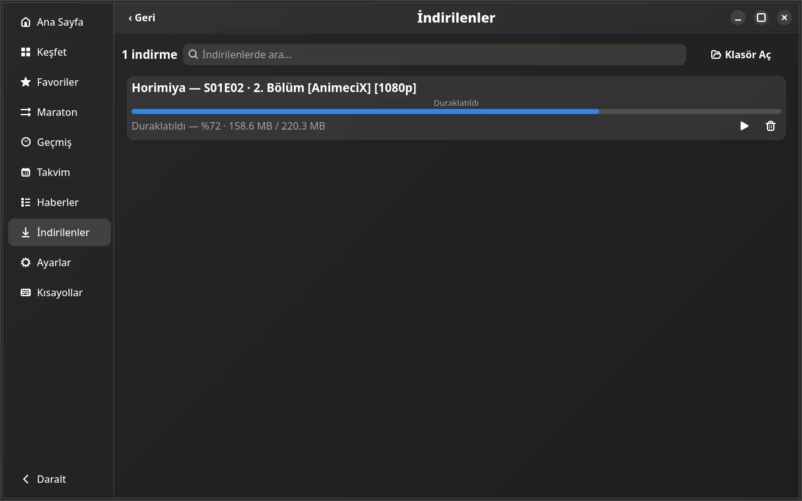
AppImage, deb or rpm. Pick your distro, start with one command.
curl -L -o AnimeciX.AppImage \
https://github.com/veilzon/animecix-linux/releases/latest/download/AnimeciX-x86_64.AppImage
chmod +x AnimeciX.AppImage
./AnimeciX.AppImagecurl -L -O \
https://github.com/veilzon/animecix-linux/releases/download/v1.2.7/animecix_1.2.7_amd64.deb
sudo apt install ./animecix_1.2.7_amd64.debcurl -L -O \
https://github.com/veilzon/animecix-linux/releases/download/v1.2.7/animecix-1.2.7-1.fc40.x86_64.rpm
sudo dnf install ./animecix-1.2.7-1.fc40.x86_64.rpmYou need GTK4, libadwaita and MPV on your system. The deb and rpm packages install those dependencies for you.
Six connections, resume and batch download. Choose the folder in Settings.
Real-time upscaling in MPV. Light, Ultra and Sharpening modes.
The AppImage checks on every launch. You can turn it off in Settings.
No. It is a third-party client. It uses a public API. Use it at your own responsibility.